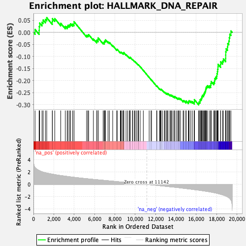
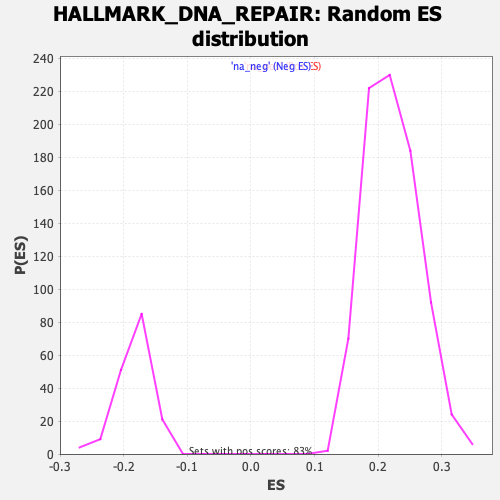

| | | Dataset | CK_basal |
| Phenotype | NoPhenotypeAvailable |
| Upregulated in class | na_neg |
| GeneSet | HALLMARK_DNA_REPAIR |
| Enrichment Score (ES) | -0.30113274 |
| Normalized Enrichment Score (NES) | -1.6374913 |
| Nominal p-value | 0.0 |
| FDR q-value | 0.024927093 |
| FWER p-Value | 0.031 |
Table: GSEA Results Summary

Fig 1: Enrichment plot: HALLMARK_DNA_REPAIR
Profile of the Running ES Score & Positions of GeneSet Members on the Rank Ordered List
| SYMBOL | RANK IN GENE LIST | RANK METRIC SCORE | RUNNING ES | CORE ENRICHMENT | | 1 | LIG1 | 156 | 2.736 | 0.0123 | No |
| 2 | POLR2I | 556 | 2.259 | 0.0085 | No |
| 3 | RFC5 | 570 | 2.248 | 0.0246 | No |
| 4 | VPS37B | 611 | 2.217 | 0.0390 | No |
| 5 | SF3A3 | 842 | 2.059 | 0.0424 | No |
| 6 | NELFB | 955 | 1.993 | 0.0515 | No |
| 7 | NME3 | 1175 | 1.895 | 0.0543 | No |
| 8 | CANT1 | 1304 | 1.848 | 0.0614 | No |
| 9 | ELL | 1849 | 1.672 | 0.0458 | No |
| 10 | TAF1C | 1866 | 1.667 | 0.0573 | No |
| 11 | ITPA | 2094 | 1.602 | 0.0575 | No |
| 12 | APRT | 2680 | 1.442 | 0.0381 | No |
| 13 | TARBP2 | 3129 | 1.341 | 0.0249 | No |
| 14 | TP53 | 3316 | 1.298 | 0.0250 | No |
| 15 | SDCBP | 3402 | 1.281 | 0.0301 | No |
| 16 | ADA | 3557 | 1.246 | 0.0314 | No |
| 17 | NT5C | 3647 | 1.223 | 0.0359 | No |
| 18 | RFC2 | 3845 | 1.183 | 0.0346 | No |
| 19 | HPRT1 | 3984 | 1.156 | 0.0361 | No |
| 20 | PDE4B | 3985 | 1.155 | 0.0446 | No |
| 21 | RAE1 | 5219 | 0.932 | -0.0121 | No |
| 22 | NELFE | 5346 | 0.911 | -0.0118 | No |
| 23 | DGUOK | 5422 | 0.897 | -0.0090 | No |
| 24 | POLD4 | 5890 | 0.822 | -0.0270 | No |
| 25 | POLL | 6213 | 0.774 | -0.0378 | No |
| 26 | POLR1C | 6217 | 0.774 | -0.0322 | No |
| 27 | BCAP31 | 6349 | 0.750 | -0.0334 | No |
| 28 | ZNF707 | 6351 | 0.749 | -0.0279 | No |
| 29 | AK3 | 6361 | 0.748 | -0.0228 | No |
| 30 | RAD51 | 6851 | 0.672 | -0.0430 | No |
| 31 | NUDT21 | 6963 | 0.654 | -0.0439 | No |
| 32 | CDA | 6968 | 0.654 | -0.0392 | No |
| 33 | POLA1 | 6997 | 0.650 | -0.0358 | No |
| 34 | RFC4 | 7075 | 0.639 | -0.0351 | No |
| 35 | RNMT | 7087 | 0.637 | -0.0309 | No |
| 36 | UMPS | 7329 | 0.599 | -0.0389 | No |
| 37 | POLA2 | 7463 | 0.576 | -0.0415 | No |
| 38 | POLR2C | 7786 | 0.525 | -0.0542 | No |
| 39 | MPG | 8182 | 0.464 | -0.0711 | No |
| 40 | TAF6 | 8228 | 0.456 | -0.0700 | No |
| 41 | POLR2D | 8537 | 0.408 | -0.0829 | No |
| 42 | NELFCD | 8585 | 0.402 | -0.0823 | No |
| 43 | POM121 | 8638 | 0.393 | -0.0821 | No |
| 44 | ARL6IP1 | 8773 | 0.373 | -0.0862 | No |
| 45 | PRIM1 | 8856 | 0.362 | -0.0878 | No |
| 46 | GPX4 | 8869 | 0.360 | -0.0857 | No |
| 47 | POLR3GL | 8882 | 0.358 | -0.0837 | No |
| 48 | SMAD5 | 9101 | 0.320 | -0.0925 | No |
| 49 | CMPK2 | 9257 | 0.295 | -0.0983 | No |
| 50 | VPS28 | 9421 | 0.271 | -0.1047 | No |
| 51 | ZWINT | 9488 | 0.258 | -0.1062 | No |
| 52 | GTF2H3 | 9491 | 0.258 | -0.1044 | No |
| 53 | TAF9 | 9508 | 0.254 | -0.1034 | No |
| 54 | AK1 | 9724 | 0.224 | -0.1128 | No |
| 55 | BRF2 | 9758 | 0.219 | -0.1129 | No |
| 56 | VPS37D | 9923 | 0.194 | -0.1199 | No |
| 57 | PDE6G | 9984 | 0.184 | -0.1216 | No |
| 58 | SSRP1 | 10123 | 0.163 | -0.1275 | No |
| 59 | GTF3C5 | 10269 | 0.141 | -0.1339 | No |
| 60 | POLH | 10307 | 0.136 | -0.1348 | No |
| 61 | GTF2H5 | 10321 | 0.133 | -0.1345 | No |
| 62 | SURF1 | 10484 | 0.106 | -0.1421 | No |
| 63 | DGCR8 | 10797 | 0.056 | -0.1578 | No |
| 64 | NT5C3A | 11370 | -0.035 | -0.1870 | No |
| 65 | POLB | 11553 | -0.063 | -0.1960 | No |
| 66 | RPA2 | 11603 | -0.069 | -0.1980 | No |
| 67 | POLR2F | 12104 | -0.152 | -0.2227 | No |
| 68 | GTF2H1 | 12132 | -0.157 | -0.2229 | No |
| 69 | RRM2B | 12394 | -0.203 | -0.2348 | No |
| 70 | FEN1 | 12453 | -0.214 | -0.2362 | No |
| 71 | TAF12 | 12520 | -0.225 | -0.2380 | No |
| 72 | BCAM | 12530 | -0.227 | -0.2368 | No |
| 73 | ADRM1 | 12550 | -0.230 | -0.2360 | No |
| 74 | NUDT9 | 12703 | -0.256 | -0.2420 | No |
| 75 | SNAPC5 | 12881 | -0.288 | -0.2490 | No |
| 76 | SUPT5H | 12939 | -0.297 | -0.2497 | No |
| 77 | DUT | 13090 | -0.320 | -0.2551 | No |
| 78 | POLR3C | 13096 | -0.321 | -0.2529 | No |
| 79 | TAF10 | 13203 | -0.341 | -0.2559 | No |
| 80 | ERCC8 | 13217 | -0.344 | -0.2540 | No |
| 81 | NFX1 | 13411 | -0.379 | -0.2611 | No |
| 82 | PCNA | 13442 | -0.382 | -0.2598 | No |
| 83 | TK2 | 13537 | -0.400 | -0.2617 | No |
| 84 | ERCC1 | 13592 | -0.409 | -0.2614 | No |
| 85 | ERCC2 | 13732 | -0.432 | -0.2654 | No |
| 86 | POLR1D | 13866 | -0.455 | -0.2689 | No |
| 87 | POLR2G | 13879 | -0.459 | -0.2661 | No |
| 88 | USP11 | 14038 | -0.485 | -0.2706 | No |
| 89 | TMED2 | 14190 | -0.511 | -0.2746 | No |
| 90 | SNAPC4 | 14250 | -0.525 | -0.2738 | No |
| 91 | XPC | 14331 | -0.539 | -0.2739 | No |
| 92 | AGO4 | 14453 | -0.564 | -0.2759 | No |
| 93 | ALYREF | 14703 | -0.617 | -0.2842 | No |
| 94 | TAF13 | 14782 | -0.632 | -0.2835 | No |
| 95 | CLP1 | 14983 | -0.672 | -0.2888 | No |
| 96 | RPA3 | 15000 | -0.675 | -0.2846 | No |
| 97 | POLD3 | 15222 | -0.720 | -0.2907 | No |
| 98 | RBX1 | 15255 | -0.726 | -0.2869 | No |
| 99 | NME1 | 15295 | -0.735 | -0.2835 | No |
| 100 | DDB2 | 15456 | -0.767 | -0.2860 | No |
| 101 | MPC2 | 15609 | -0.800 | -0.2879 | No |
| 102 | BOLA2 | 15806 | -0.849 | -0.2917 | No |
| 103 | GMPR2 | 15810 | -0.849 | -0.2856 | No |
| 104 | ZNRD1 | 15812 | -0.850 | -0.2793 | No |
| 105 | GTF2B | 16236 | -0.931 | -0.2942 | Yes |
| 106 | ERCC5 | 16274 | -0.940 | -0.2891 | Yes |
| 107 | DDB1 | 16370 | -0.961 | -0.2869 | Yes |
| 108 | CCNO | 16373 | -0.962 | -0.2798 | Yes |
| 109 | POLR2H | 16454 | -0.980 | -0.2767 | Yes |
| 110 | EIF1B | 16525 | -1.000 | -0.2729 | Yes |
| 111 | EDF1 | 16553 | -1.006 | -0.2668 | Yes |
| 112 | RALA | 16599 | -1.019 | -0.2615 | Yes |
| 113 | IMPDH2 | 16713 | -1.045 | -0.2596 | Yes |
| 114 | HCLS1 | 16764 | -1.058 | -0.2543 | Yes |
| 115 | POLR2K | 16815 | -1.073 | -0.2489 | Yes |
| 116 | NCBP2 | 16876 | -1.088 | -0.2439 | Yes |
| 117 | POLD1 | 16921 | -1.100 | -0.2380 | Yes |
| 118 | UPF3B | 16946 | -1.105 | -0.2310 | Yes |
| 119 | GTF2A2 | 17006 | -1.115 | -0.2257 | Yes |
| 120 | ERCC4 | 17083 | -1.134 | -0.2212 | Yes |
| 121 | TSG101 | 17272 | -1.190 | -0.2221 | Yes |
| 122 | GTF2F1 | 17413 | -1.234 | -0.2201 | Yes |
| 123 | NME4 | 17436 | -1.241 | -0.2120 | Yes |
| 124 | PNP | 17464 | -1.249 | -0.2042 | Yes |
| 125 | RAD52 | 17720 | -1.330 | -0.2074 | Yes |
| 126 | NPR2 | 17798 | -1.355 | -0.2013 | Yes |
| 127 | SEC61A1 | 17817 | -1.362 | -0.1921 | Yes |
| 128 | SAC3D1 | 17899 | -1.389 | -0.1860 | Yes |
| 129 | GUK1 | 18009 | -1.433 | -0.1809 | Yes |
| 130 | POLE4 | 18033 | -1.443 | -0.1714 | Yes |
| 131 | CSTF3 | 18081 | -1.465 | -0.1629 | Yes |
| 132 | DAD1 | 18102 | -1.475 | -0.1530 | Yes |
| 133 | SUPT4H1 | 18133 | -1.487 | -0.1435 | Yes |
| 134 | ERCC3 | 18140 | -1.490 | -0.1327 | Yes |
| 135 | MRPL40 | 18386 | -1.595 | -0.1335 | Yes |
| 136 | STX3 | 18396 | -1.599 | -0.1220 | Yes |
| 137 | POLR2A | 18583 | -1.693 | -0.1190 | Yes |
| 138 | REV3L | 18665 | -1.733 | -0.1103 | Yes |
| 139 | COX17 | 18887 | -1.870 | -0.1078 | Yes |
| 140 | POLR2J | 18892 | -1.870 | -0.0941 | Yes |
| 141 | SRSF6 | 18897 | -1.873 | -0.0804 | Yes |
| 142 | POLR2E | 18933 | -1.899 | -0.0681 | Yes |
| 143 | CETN2 | 19067 | -2.016 | -0.0600 | Yes |
| 144 | RFC3 | 19092 | -2.040 | -0.0460 | Yes |
| 145 | AAAS | 19197 | -2.141 | -0.0355 | Yes |
| 146 | ADCY6 | 19243 | -2.199 | -0.0214 | Yes |
| 147 | TYMS | 19292 | -2.282 | -0.0069 | Yes |
| 148 | DCTN4 | 19404 | -2.535 | 0.0062 | Yes |
Table: GSEA details [plain text format]

Fig 2: HALLMARK_DNA_REPAIR: Random ES distribution
Gene set null distribution of ES for HALLMARK_DNA_REPAIR